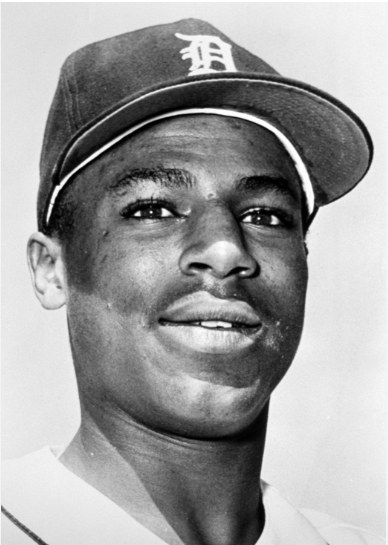
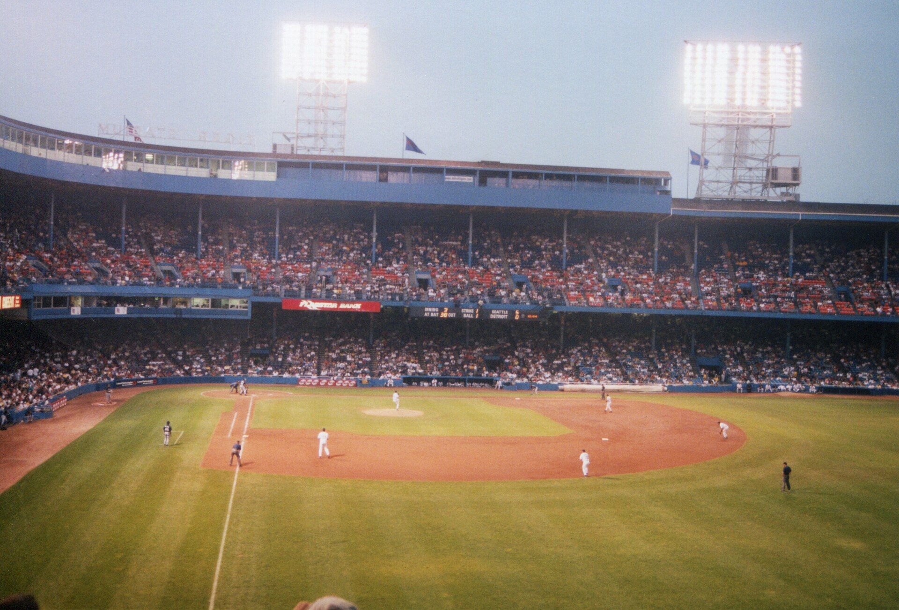
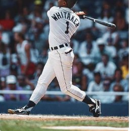
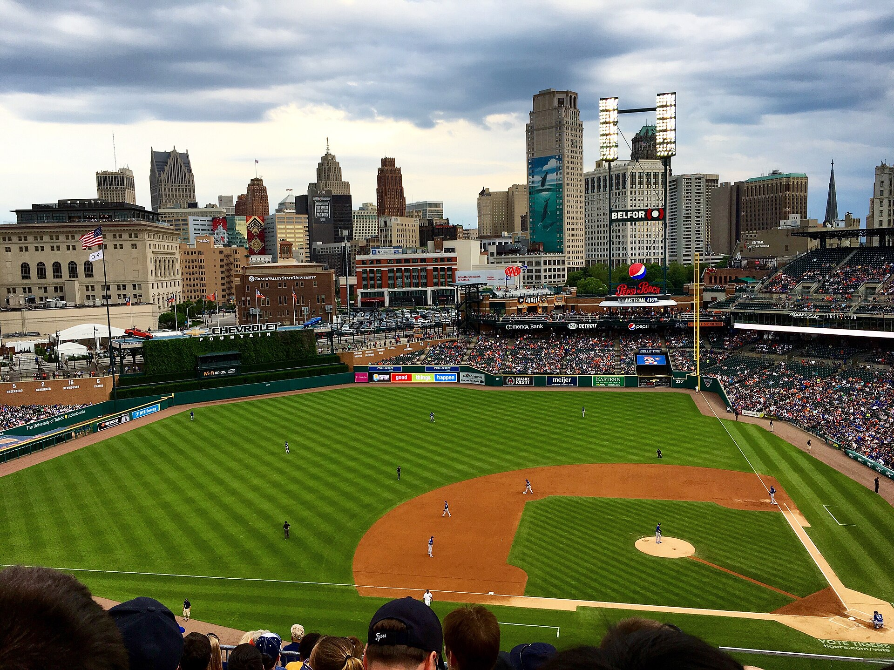

Early in his Detroit career — uniform No. 1, retired 2022Nineteen seasons, one team, one position. More career value than every second baseman elected to Cooperstown in the last forty years except the pre-war giants — and one year on the ballot before the writers were done with him.
What follows is the record. Not the sentiment, not the Tigers-fan grievance: the numbers Whitaker actually put up, set beside the numbers of the men already wearing the plaque. The gap runs the wrong way.

The record
A .276 average with a .363 on-base percentage and a 117 OPS+, built on power and plate discipline that were unusual at the position, plus a glove good enough for three Gold Gloves. He appeared in 2,390 games and played second base in 2,308 of them. He never played anywhere else.

Where he ranks
Every second baseman here is either in the Hall of Fame or has a live case. Whitaker leads all of them. The bar for induction at the position — the average of everyone already in — is 69.4 career WAR and 56.9 JAWS.
Side by side
JAWS averages a player's career WAR with his seven best seasons, so it rewards peak and longevity together. The Hall's own average at second base is 69.4 / 44.4 / 56.9. Whitaker clears the first, misses the second, and lands on the third.
| Player | Status | WAR | WAR7 | JAWS | OPS+ | Hits | HR |
|---|---|---|---|---|---|---|---|
| Lou Whitaker | Not in | 75.1 | 37.9 | 56.4 | 117 | 2,369 | 244 |
| Ryne Sandberg | HOF 2005 | 68.0 | 46.2 | 57.1 | 114 | 2,386 | 282 |
| Roberto Alomar | HOF 2011 | 67.1 | 42.9 | 55.0 | 116 | 2,724 | 210 |
| Craig Biggio | HOF 2015 | 65.5 | 41.8 | 53.6 | 112 | 3,060 | 291 |
| Joe Gordon | HOF 2009 | 57.2 | 41.9 | 49.6 | 120 | 1,530 | 253 |
| Jeff Kent | HOF 2026 | 55.4 | 35.6 | 45.5 | 123 | 2,461 | 377 |
| Bobby Doerr | HOF 1986 | 51.2 | 34.4 | 42.8 | 115 | 2,042 | 223 |
| Nellie Fox | HOF 1997 | 49.4 | 33.9 | 41.6 | 93 | 2,663 | 35 |
| Bill Mazeroski | HOF 2001 | 36.5 | 30.4 | 33.5 | 84 | 2,016 | 138 |
| Alan Trammell (SS) | HOF 2018 | 70.7 | 44.6 | 57.7 | 110 | 2,365 | 185 |
Trammell, his double-play partner for 19 years, was elected in 2018 with 4.4 fewer wins of career value.
The argument
The candidacy
Whitaker retires after nineteen seasons, all with Detroit.
15 of 515 ballots. 2.9%. Below the 5% threshold, so he is removed from BBWAA consideration permanently after one year.
Modern Baseball Era Committee: 6 of 16 votes. Twelve were needed. Ted Simmons and Marvin Miller are elected instead.
Detroit retires his No. 1. The franchise had reserved that honor almost entirely for Hall of Famers. They hung his number anyway.

The eight-name Contemporary Baseball Era ballot is released. Whitaker isn't on it. An eleven-person historical overview committee, not the electors, made that call.
Jeff Kent is elected with 14 of 16 votes, entering Cooperstown with 55.4 career WAR — nearly twenty wins fewer than Whitaker.
The next time the Contemporary Baseball Era players ballot is considered. Whitaker will be 71.
He isn't alone
Whitaker belongs to a cohort of players whose value came from defense, walks, baserunning and durability — everything the pre-WAR electorate couldn't measure. They all left the ballot in a hurry.
| Player | Pos | WAR | First ballot | Since |
|---|---|---|---|---|
| Bill Dahlen | SS | 75.3 | — | Never close |
| Lou Whitaker | 2B | 75.1 | 2.9% (2001) | 6/16 in 2019 |
| Bobby Grich | 2B | 71.1 | 2.6% (1992) | No era ballot |
| Kenny Lofton | CF | 68.4 | 3.2% (2013) | No era ballot |
| Graig Nettles | 3B | 68.0 | 8.3% (1994) | 4 years, then out |
| Rick Reuschel | SP | 68.2 | 0.4% (1997) | No era ballot |
| Dwight Evans | RF | 67.1 | 5.9% (1997) | 8/16 in 2019 |
| Buddy Bell | 3B | 66.3 | 1.7% (1995) | Out |
| Willie Randolph | 2B | 65.9 | 1.1% (1998) | Out |
| Reggie Smith | RF | 64.6 | 0.7% (1988) | Out |
| Jim Edmonds | CF | 60.4 | 2.5% (2016) | Out |
There is a counter-trend, and it's the best reason for optimism. Ron Santo, Alan Trammell, Ted Simmons, Scott Rolen and Dick Allen all cleared eventually. So did Andruw Jones, in January 2026 — a defense-first case that opened at 7.3% of the vote, the lowest debut ever for a player the writers later elected, and finished at 78.4% in his ninth year.
The difference is that Jones stayed on the ballot long enough for the electorate to turn over. Whitaker, Grich, Lofton and Randolph never got that.
The verdict
Not as an inner-circle immortal. Whitaker was a four-to-five win player who showed up every day for nineteen years, and the case against him — that peak dominance should count for more than accumulated value — is a legitimate philosophy held by serious people.
It just isn't the philosophy the Hall has applied at second base.
Once you have enshrined Mazeroski at 36.5 wins, Fox at 49.4, Doerr at 51.2 and Kent at 55.4, the question stops being whether Whitaker is good enough. It becomes why the standard changed for him. The obstacle now is procedural, not evaluative: eight ballot slots, a crowded era, and a screening committee that has passed him over twice running.
December 2028 is the next real test.
Tiger Stadium interior — photograph by Rick Dikeman, licensed CC BY-SA 3.0, via Wikimedia Commons. Displayed unmodified; tone treatment applied in CSS only.
Whitaker portrait via the Society for American Baseball Research; batting photograph, source unknown. Both remain the copyright of their respective owners and appear here for commentary and criticism.
Comerica Park — licensed CC BY-SA 4.0, via Wikimedia Commons. Displayed unmodified; tone treatment applied in CSS only.
{kind=link}
{kind=link}